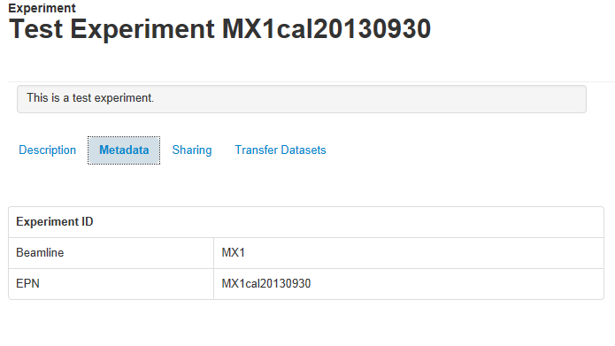
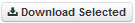

MyTardis Quick Reference Guide¶
Accessing MyTardis¶
MyTardis can be accessed with any web browser. Your data can be accessed by clicking on the login link and entering your credentials.
Browsing and Sharing Experiments¶
MyTardis organises data by Experiments. Each Experiment contains many datasets. Each dataset gives users the ability to browse and download datafiles.
Clicking on the name of an Experiment will load a new page which displays descriptive information pertaining to the Experiment as well a list of its datasets. There are two tabs on the left: Description and Metadata.

The number of datasets and files within an Experiment, as well as the total size, date uploaded and access rights are displayed near the top of the page.
Description
The Description tab is loaded by default whenever an
Experiment is accessed through the interface and displays detailed information
about the Experiment. The information provided may include the institution
that ran the Experiment, the licensing arrangement that governs it, as well as
the Experiment’s administrator(s). More information (if any has been provided)
about the Experiment can be accessed by clicking on the  button. The Description tab also allows an Experiment’s datasets to be
downloaded in their entirety as a single archive by clicking on the
button.
button. The Description tab also allows an Experiment’s datasets to be
downloaded in their entirety as a single archive by clicking on the
button.
Metadata
The Metadata tab displays detailed metadata information about an Experiment if available.
Sharing Experiments
The Sharing tab displays information about the people and/or groups that currently have access to the Experiment, and also allows users or groups to be provided with access. The tab displays the current level of access, the licence that governs the Experiment, and also displays a list of the individual users and groups that have been provided with access.
Levels of access to experiments are as follows:
- Read: Users can view and download, but not edit metadata or add data.
- Edit: Users can view and download, and freely edit metadata and add data.
- Owner: Users have all the above permissions, and can share this experiment with others.
Another access mechanism is provided via temporary access links. These temporary links can be created by experiment owners and sent to collaborators, including ones external to the lab or institution. Temporary links provide read-only (and download) access for a single experiment.
{kind=link}
Accessing and Downloading Datasets¶
The names of accessible datasets are listed in the right-most pane displayed in the Experiment page. Datasets containing files can be accessed by clicking on the name of the relevant dataset. The number of individual files within each dataset and the total size of the dataset are displayed to the right of each entry.
Clicking on the checkbox () to the left of a dataset will select it and allow the data to be downloaded by clicking on the  button. The text box above the dataset list can be used to filter datasets by title.

Downloading Datasets
Datasets can be viewed by clicking on their title in the Experiment page. The files in a dataset will be displayed on the right-hand side of the page and descriptive metadata will be displayed on the left. If the dataset contains image data, previews will be displayed on the left. Clicking on a preview image will display the image at a larger resolution.
{kind=link}
The files in a dataset can be viewed in the browser, with 100 files for each
page appearing by default. They can be downloaded either as a single archive
(via ) or individually (via the  button next to each
file). Clicking on the checkbox to the left of a file will select it and allow
the data to be downloaded by clicking on the
button next to each
file). Clicking on the checkbox to the left of a file will select it and allow
the data to be downloaded by clicking on the  button. The text
box above the file list can be used to filter files by name. Clicking on the
button will display details about the image including any
metadata. Large preview images for files can be selected and viewed by
clicking on the small thumbnail of the relevant image under each file.
button. The text
box above the file list can be used to filter files by name. Clicking on the
button will display details about the image including any
metadata. Large preview images for files can be selected and viewed by
clicking on the small thumbnail of the relevant image under each file.